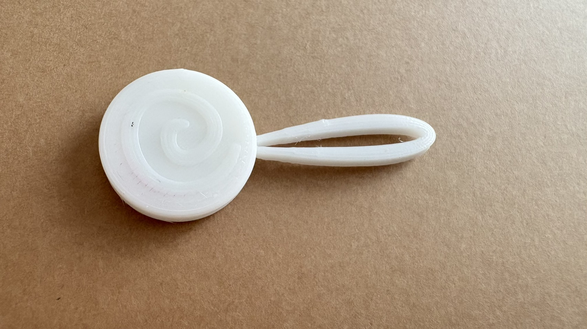
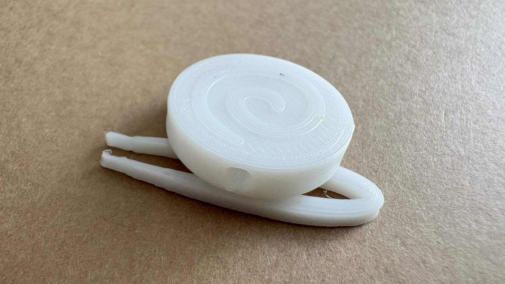
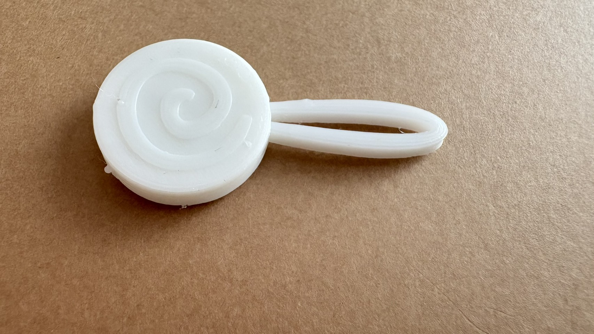
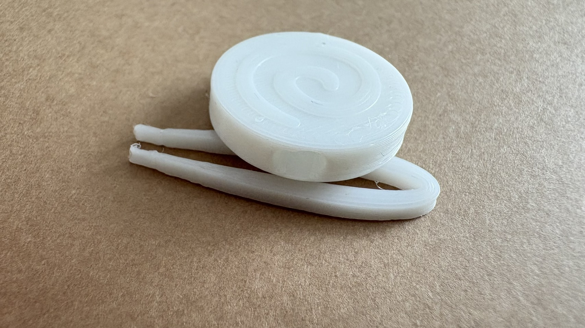

Sketch ☆

キャンディー型のピンセットで、棒の部分が取り外し可能になってます
既存のピンセットは可愛さがあまりないし求めてないと思ったので、
可愛くて気分が上がるピンセットがあったらいいなと思って作りました
好きなように色を塗ってオリジナルキャンディーを作れます
キャンディー型のピンセットで、棒の部分が取り外し可能になってます
既存のピンセットは可愛さがあまりないし求めてないと思ったので、
可愛くて気分が上がるピンセットがあったらいいなと思って作りました
好きなように色を塗ってオリジナルキャンディーを作れます


ピンセットと穴のサイズが合わなくて全然刺さりませんでした
ピンセットを先にかけて細くなるように設計したので先を動かすことはできたけど
すきまがとじる部分が思ったよりもなくてあまり棒のように見えなかったです


ピンセットの穴を正円から楕円に変えました
1回目の時より刺さる長さが伸びて、抜けにくくなりました
時間がなくて飴のほうしか変えれなかったけど、ピンセットのほうももう少し
改良して閉じやすくしたらもっと棒に見えてキャンディー感がでると思います